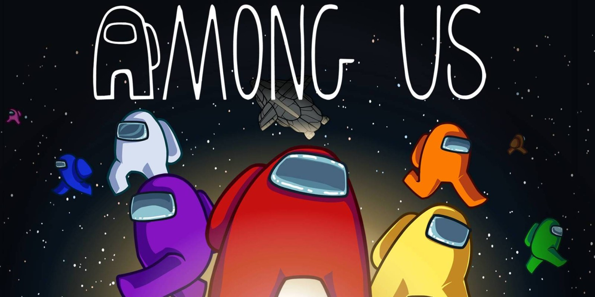

Успей приобрести!
Grand Theft Auto V (GTA V) — пятнадцатая игра из серии Grand Theft Auto, выполненная в жанре Action/Sandbox. Впервые в истории серии в игре присутствуют сразу три главных героя, между которыми можно переключаться почти в любое время. Игроку предоставлена полная свобода действий - он может путешествовать по городу и его окрестностям, грабить прохожих, воровать машины - или же жить простой жизнью обычного человека. Каждый из героев имеет свои уникальные особенности - один может замедлят время, пока едет на машине, второй умеет замедлять время в перестрелках, ну а третий может становиться безумным берсерком, увеличивая наносимый врагам урон.

Minecraft - это инди-игра в жанре песочницы с элементами выживания и открытым миром. По стилю, мир игры полностью состоит из блоков и для текстурирования используются текстуры с низким разрешением. Изначально игра разработана шведским программистом Маркусом Перссоном , известным также как «Notch». Игра была задумана как клон игры Infiniminer, хотя Перссон выражал желание уподобить её геймплей игре Dwarf Fortress. Игра написана на Java с использованием библиотеки LWJGL. Геймплей в игре прост - игроки добывают ресурсы, чтобы строить дома, замки и целые города. Ограничений в Minecraft фактически нет, кроме высоты уровня - в остальном игроки вольны творить все, что пожелают. Кроме компьютерной версии Minecraft так же имеет особые мобильные версии для смартфонов, версию для PS Vita, и версии для консолей, каждая из по-своему. которых отличается от стандартной версии.

Among Us - игра, вдохновлённая салонной ролевой игрой «Мафия», выполнена в научно-фантастической тематике; игроки в ней случайным образом разделяются на две команды: члены экипажа и скрытые среди них предатели. Члены экипажа не знают, кто из их товарищей предатель, и могут голосованием «казнить» любого персонажа, пытаясь выявить предателей с помощью дедукции. Члены экипажа выигрывают, если им удастся избавиться от предателей или хотя бы довести до завершения все предложенные экипажу задания-головоломки; предатели выигрывают, если им удастся, не попадаясь, скрытно убить достаточное количество членов экипажа либо довести до завершения крупную диверсию — например, взорвать реактор или прекратить подачу кислорода.
Fortnite — компьютерная онлайн-игра, разработанная американской компанией Epic Games и выпущенная в ранний доступ в 2017 году[6]. Fortnite предлагает игрокам на выбор три раздельных режима: Fortnite: Save the World, кооперативный симулятор выживания с открытым миром, в котором игрокам предлагается сообща отбиваться от монстров, похожих на зомби, с помощью оружия и различных построек; Fortnite: Battle Royale — соревновательный режим в жанре королевской битвы, в котором 100 игроков должны сражаться друг с другом, пока в живых не останется только один; и добавленный в 2018 году режим Fortnite: Creative, режим-«песочница», в котором игроки могут самостоятельно создавать различные сооружения, наподобие Minecraft.